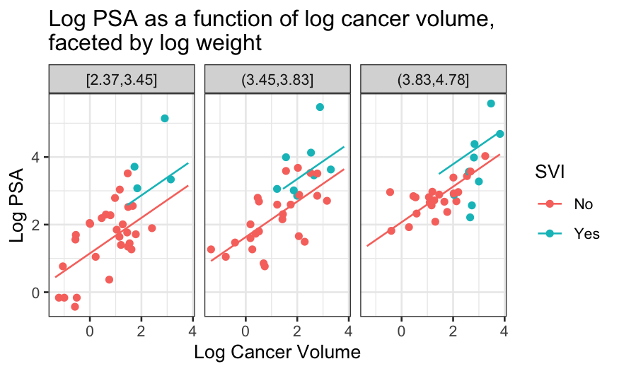
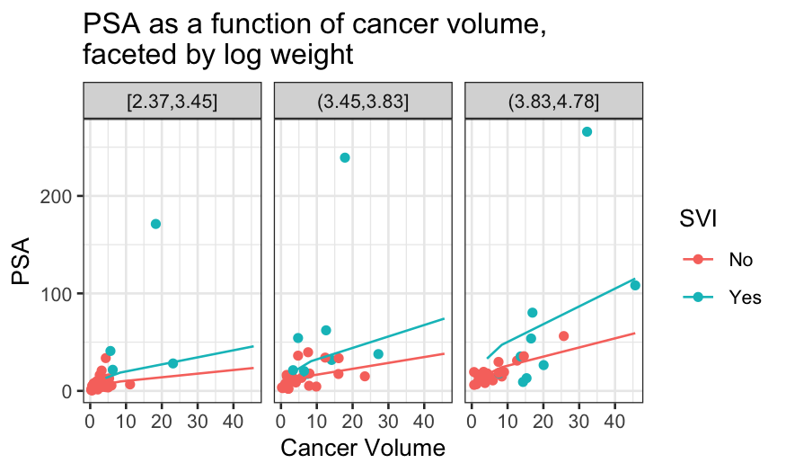

Stat 470/670 Lecture 14: Model-building with a
moderate number of variables
Julia Fukuyama
Model building
- Over the next couple of weeks we’ll get back to building models, and
we’ll look at models for different kinds of responses (binary, count,
categorical).
- Today we’ll look at model-building with a moderate number of
variables. Today will be linear models, but the ideas carry over to
logistic regression and the generalized linear models we’ll talk about
later.
- Note on terminology: for statisticians, “linear model” means that
your response variable follows a normal distribution. “Generalized
linear models” will be models for which the response variable follows a
different sort of distribution.
Data: Prostate Cancer
We have a data set containing clinical data on patients who were
about to receive a radical prostatectomy. The relevant variables
are:
Variables about sizes:
lcavol: log cancer volume
lweight: log prostate weight
lbph: log of the amount of benign prostatic
hyperplasia
Variables about the individual:
Variables measured by the pathologist:
svi: Seminal vesicle invasion, a measure of how
advanced the cancer is.
lcp: log of capsular penetration
gleason: A numeric vector giving the Gleason
score. In theory can range from 2-10, in practice ranges from
6-10.
pgg45: Percent of cells with Gleason score 4 or 5.
The “response” variable:
lpsa: log of the concentration of prostate-stimulating
antigen.
We are primarily interested in lpsa, which is used as a
marker for prostate cancer. We would like to know whether and how it is
related to the other variables we have available to us.
First we look at the data
prostate = read.table("../../datasets/prostate.txt")
summary(prostate)
## lcavol lweight age lbph
## Min. :-1.3471 Min. :2.375 Min. :41.00 Min. :-1.3863
## 1st Qu.: 0.5128 1st Qu.:3.376 1st Qu.:60.00 1st Qu.:-1.3863
## Median : 1.4469 Median :3.623 Median :65.00 Median : 0.3001
## Mean : 1.3500 Mean :3.629 Mean :63.87 Mean : 0.1004
## 3rd Qu.: 2.1270 3rd Qu.:3.876 3rd Qu.:68.00 3rd Qu.: 1.5581
## Max. : 3.8210 Max. :4.780 Max. :79.00 Max. : 2.3263
## svi lcp gleason pgg45
## Min. :0.0000 Min. :-1.3863 Min. :6.000 Min. : 0.00
## 1st Qu.:0.0000 1st Qu.:-1.3863 1st Qu.:6.000 1st Qu.: 0.00
## Median :0.0000 Median :-0.7985 Median :7.000 Median : 15.00
## Mean :0.2165 Mean :-0.1794 Mean :6.753 Mean : 24.38
## 3rd Qu.:0.0000 3rd Qu.: 1.1787 3rd Qu.:7.000 3rd Qu.: 40.00
## Max. :1.0000 Max. : 2.9042 Max. :9.000 Max. :100.00
## lpsa train
## Min. :-0.4308 Mode :logical
## 1st Qu.: 1.7317 FALSE:30
## Median : 2.5915 TRUE :67
## Mean : 2.4784
## 3rd Qu.: 3.0564
## Max. : 5.5829
prostate = prostate %>% select(-"train")
ggpairs(prostate, progress = FALSE)

From the ggpairs plot, we see that the distributions of
the variables are reasonably symmetrical, not that skewed, and that
there is at least some relationship between most of the variables and
lpsa.
And a side note: this data set has already been transformed for you.
Many of the variables are logged versions of what were presumably the
raw measurements. This is actually a really important step: models with
the logged variables perform substantially better than models with the
raw variables, as we can see if we un-transform:
prostate_unlogged = prostate %>%
mutate(cavol = exp(lcavol), weight = exp(lweight), bph = exp(lbph), cp = exp(lcp)) %>%
select(-"lcavol", -"lweight", -"lbph", -"lcp")
summary(lm(lpsa ~ ., data = prostate))
##
## Call:
## lm(formula = lpsa ~ ., data = prostate)
##
## Residuals:
## Min 1Q Median 3Q Max
## -1.76644 -0.35510 -0.00328 0.38087 1.55770
##
## Coefficients:
## Estimate Std. Error t value Pr(>|t|)
## (Intercept) 0.181561 1.320568 0.137 0.89096
## lcavol 0.564341 0.087833 6.425 6.55e-09 ***
## lweight 0.622020 0.200897 3.096 0.00263 **
## age -0.021248 0.011084 -1.917 0.05848 .
## lbph 0.096713 0.057913 1.670 0.09848 .
## svi 0.761673 0.241176 3.158 0.00218 **
## lcp -0.106051 0.089868 -1.180 0.24115
## gleason 0.049228 0.155341 0.317 0.75207
## pgg45 0.004458 0.004365 1.021 0.31000
## ---
## Signif. codes: 0 '***' 0.001 '**' 0.01 '*' 0.05 '.' 0.1 ' ' 1
##
## Residual standard error: 0.6995 on 88 degrees of freedom
## Multiple R-squared: 0.6634, Adjusted R-squared: 0.6328
## F-statistic: 21.68 on 8 and 88 DF, p-value: < 2.2e-16
summary(lm(lpsa ~ ., data = prostate_unlogged))
##
## Call:
## lm(formula = lpsa ~ ., data = prostate_unlogged)
##
## Residuals:
## Min 1Q Median 3Q Max
## -1.78876 -0.40705 -0.00634 0.46725 1.82792
##
## Coefficients:
## Estimate Std. Error t value Pr(>|t|)
## (Intercept) 0.759219 1.210444 0.627 0.53214
## age -0.008545 0.012087 -0.707 0.48144
## svi 0.769166 0.270646 2.842 0.00557 **
## gleason 0.130183 0.166701 0.781 0.43694
## pgg45 0.005412 0.004567 1.185 0.23927
## cavol 0.073661 0.014479 5.087 2.03e-06 ***
## weight 0.012511 0.005322 2.351 0.02095 *
## bph 0.056512 0.034547 1.636 0.10546
## cp -0.040047 0.034216 -1.170 0.24499
## ---
## Signif. codes: 0 '***' 0.001 '**' 0.01 '*' 0.05 '.' 0.1 ' ' 1
##
## Residual standard error: 0.764 on 88 degrees of freedom
## Multiple R-squared: 0.5985, Adjusted R-squared: 0.562
## F-statistic: 16.4 on 8 and 88 DF, p-value: 1.329e-14
If we had started off with the raw data, we would have seen that we
should log-transform some of the variables by looking at their marginal
distributions: the variables that were transformed started off quite
skewed, and the transformation got rid of the skewness.
ggpairs(prostate_unlogged, progress = FALSE)
Linear model with all the predictors
As a first step, we can fit a linear model with all the predictors
and look at the results. We see that a lot of the coefficients are
within the margin of error of zero, which suggests to us that a model
with fewer predictors would do better.
prostate_lm = lm(lpsa ~ ., data = prostate)
prostate_coefs = tidy(prostate_lm, conf.int = TRUE)
ggplot(prostate_coefs[-1, ], aes(x = estimate, y = term, xmin = conf.low, xmax = conf.high)) +
geom_point() + geom_errorbarh() + geom_vline(xintercept = 0)

Automatic ways of choosing subsets of variables
There are a lot of ways of doing variable selection for linear
models.
- Forward stepwise regression: Predictors are added to the model one
at a time, stopping when adding a new predictor doesn’t seem to help.
Computationally efficient.
- Backward stepwise regression: Predictors are added to or subtracted
from the model one at a time, stopping when subtracting an existing
predictor seems to hurt too much (for backward stepwise). Works if you
have fewer predictors than observations. Computationally efficient.
- Best subsets: For every potential number of predictors used in the
model, find the combination of predictors that does the best.
Computationally intensive.
With eight predictors and a laptop, we can actually just look through
all the subsets and see which model performs best.
This is what the regsubsets in the package
leaps does for you.
library(leaps)
prostate_best_subset = regsubsets(lpsa ~ ., data = prostate)
summary(prostate_best_subset)$which
## (Intercept) lcavol lweight age lbph svi lcp gleason pgg45
## 1 TRUE TRUE FALSE FALSE FALSE FALSE FALSE FALSE FALSE
## 2 TRUE TRUE TRUE FALSE FALSE FALSE FALSE FALSE FALSE
## 3 TRUE TRUE TRUE FALSE FALSE TRUE FALSE FALSE FALSE
## 4 TRUE TRUE TRUE FALSE TRUE TRUE FALSE FALSE FALSE
## 5 TRUE TRUE TRUE TRUE TRUE TRUE FALSE FALSE FALSE
## 6 TRUE TRUE TRUE TRUE TRUE TRUE FALSE FALSE TRUE
## 7 TRUE TRUE TRUE TRUE TRUE TRUE TRUE FALSE TRUE
## 8 TRUE TRUE TRUE TRUE TRUE TRUE TRUE TRUE TRUE
This shows us that the best one-predictor model uses
lcavol, the best two-predictor model uses
lcavol and lweight, the best three-predictor
model uses lcavol, lweight, and
svi, and so on.
We can use this set of models as guidance for what variables to
include, and build up an interpretable model using some of the tools
we’ve seen earlier in the course.
regsubsets also does forward and backward stepwise
regression. In this case they all give the same results.
prostate_forward = regsubsets(lpsa ~ ., data = prostate, method = "forward")
summary(prostate_forward)$which
## (Intercept) lcavol lweight age lbph svi lcp gleason pgg45
## 1 TRUE TRUE FALSE FALSE FALSE FALSE FALSE FALSE FALSE
## 2 TRUE TRUE TRUE FALSE FALSE FALSE FALSE FALSE FALSE
## 3 TRUE TRUE TRUE FALSE FALSE TRUE FALSE FALSE FALSE
## 4 TRUE TRUE TRUE FALSE TRUE TRUE FALSE FALSE FALSE
## 5 TRUE TRUE TRUE TRUE TRUE TRUE FALSE FALSE FALSE
## 6 TRUE TRUE TRUE TRUE TRUE TRUE FALSE FALSE TRUE
## 7 TRUE TRUE TRUE TRUE TRUE TRUE TRUE FALSE TRUE
## 8 TRUE TRUE TRUE TRUE TRUE TRUE TRUE TRUE TRUE
prostate_backward = regsubsets(lpsa ~ ., data = prostate, method = "backward")
summary(prostate_backward)$which
## (Intercept) lcavol lweight age lbph svi lcp gleason pgg45
## 1 TRUE TRUE FALSE FALSE FALSE FALSE FALSE FALSE FALSE
## 2 TRUE TRUE TRUE FALSE FALSE FALSE FALSE FALSE FALSE
## 3 TRUE TRUE TRUE FALSE FALSE TRUE FALSE FALSE FALSE
## 4 TRUE TRUE TRUE FALSE TRUE TRUE FALSE FALSE FALSE
## 5 TRUE TRUE TRUE TRUE TRUE TRUE FALSE FALSE FALSE
## 6 TRUE TRUE TRUE TRUE TRUE TRUE FALSE FALSE TRUE
## 7 TRUE TRUE TRUE TRUE TRUE TRUE TRUE FALSE TRUE
## 8 TRUE TRUE TRUE TRUE TRUE TRUE TRUE TRUE TRUE
all(summary(prostate_backward)$which == summary(prostate_forward)$which)
## [1] TRUE
all(summary(prostate_backward)$which == summary(prostate_best_subset)$which)
## [1] TRUE
We start off looking at the best one-predictor model, with
lcavol predicting lpsa.
ggplot(prostate, aes(x = lcavol, y = lpsa)) + geom_point() + geom_smooth()
## `geom_smooth()` using method = 'loess' and formula = 'y ~ x'
We see that the relationship is pretty close to linear (a line would
go through the entire confidence band of the smoother), and so we’re ok
with using a linear function of lcavol to predict
lpsa.
If there had been a major non-linearity here, we would have wanted to
ditch the linear modeling approach and do something non-parametric,
maybe loess.
Then we can move to the two-predictor model, and see what the
relationship between lcavol, lweight, and
lpsa looks like.
We can make a coplot to examine the relationship between
lpsa and lcavol, with lweightas
the given variable
ggplot(prostate, aes(x = lcavol, y = lpsa)) + geom_point() + geom_smooth(span = 1) +
facet_grid(~cut_number(lweight, n = 3))
## `geom_smooth()` using method = 'loess' and formula = 'y ~ x'
Here it seems like there is some non-linearity, but only for the
observations with a high value of lweight.
If we had a lot more observations, this might prompt us to move to
loess, but since the non-linearity is based on just a few points, we
want to see first whether the non-linearity shows up in other graphs as
well.
The best three-predictor model identified by leaps
included svi in addition to lcavol and
lweight, so we next look at those four variables
together.
svi is binary and there are only 21 cases where
svi is equal to 1, we can’t make a lot of facets and we
don’t trust curves that much.
##
## 0 1
## 76 21
prostate$svi = recode(prostate$svi, `1` = "Yes", `0` = "No")
ggplot(prostate, aes(x = lcavol, y = lpsa, group = svi, color = svi)) +
geom_point() +
geom_smooth(method = "lm", se = FALSE) + facet_wrap(~ cut_number(lweight, n = 2))
## `geom_smooth()` using formula = 'y ~ x'
The different slopes suggest an interaction, but again, we don’t have
that much data.
Next we try looking at the predictors from the four-predictor model.
This is pushing the limits of the number of variables we can look at all
at once, but we will try.
We can look at the relationship between lpsa,
lcavol, and svi, with lweight and
lbph as the given variables.
ggplot(prostate, aes(x = lcavol, y = lpsa, group = svi, color = svi)) +
geom_point() +
geom_smooth(method = "lm", se = FALSE) +
facet_grid(cut_number(lweight, n = 2) ~ cut(lbph, breaks = c(-2, -1, 3)))
## `geom_smooth()` using formula = 'y ~ x'
Based on this visualization, we might not be confident about an
interaction: the blue lines vary in slope, but there’s based on very
small samples. The red lines have different heights but are similar in
slope.
Automatic ways of choosing model sizes:
- AIC:
\(2k - 2 \log(\hat L)\), where \(k\) is the number of parameters in the
model and \(\hat L\) is the likelihood
at the fitted parameter values.
- BIC:
\(k \log n - 2 \log(\hat L)\), where
\(k\) is the number of parameters,
\(n\) is the number of observations,
and \(\hat L\) is the likelihood at the
fitted parameter values.
With each of these, we choose the model with the lowest value of the
selection criterion.
In EDA we’re not always required to find a “best” model, and even if
we were we can decide on what best means subjectively.
If you wanted to fit a linear model with lcavol,
lweight, and svi as predictors plus
interactions, you’re free to do so and then call that “best” because of
the complexity you can get out of a relatively small number of
variables.
We can also check what the model selection criteria tell us about how
many variables to use:
cp_df = data.frame(value = summary(prostate_best_subset)$cp,
n_params = seq_along(summary(prostate_best_subset)$cp),
type = "Cp")
bic_df = data.frame(value = summary(prostate_best_subset)$bic,
n_params = seq_along(summary(prostate_best_subset)$bic),
type = "BIC")
model_selection_criterion_df = rbind(cp_df, bic_df)
ggplot(model_selection_criterion_df, aes(x = n_params, y = value)) +
geom_point() + facet_wrap(~ type, scales = "free_y")
Even though the lowest value of Cp is for 5 predictors (intercept + 4
variables), the Cp value for 3 predictors is very close to the value for
5 predictors and BIC has a strong minimum at 5 predictors. The two plots
suggest that if we don’t believe we need any interactions, we should use
a model with an intercept and two predictors.
Final model
lm_final = lm(lpsa ~ lcavol + lweight, data = prostate)
final_fits = augment(lm_final)
prostate_with_lweight_bins = prostate %>%
mutate(lweight_bins = cut_number(lweight, n = 3)) %>%
separate(lweight_bins, into = c(NA, "lo", "hi", NA), remove = FALSE, sep = "\\[|\\(|\\)|\\]|,") %>%
mutate(bin_mean = (as.numeric(lo) + as.numeric(hi)) / 2)
prostate_grid_final = expand.grid(lweight = unique(prostate_with_lweight_bins$bin_mean),
lcavol = quantile(prostate$lcavol)) %>% data.frame()
prostate_fits_on_grid = augment(lm_final, newdata = prostate_grid_final)
prostate_fits_on_grid = merge(prostate_fits_on_grid,
unique(prostate_with_lweight_bins[,c("lweight_bins", "bin_mean")]),
by.x = "lweight", by.y = "bin_mean")
ggplot(prostate_with_lweight_bins, aes(x = lcavol, y = lpsa, color = lweight_bins)) +
geom_point() +
geom_line(aes(y = .fitted), data = prostate_fits_on_grid) +
scale_x_continuous("Log Cancer Volume") + scale_y_continuous("Log PSA") +
scale_color_discrete("Log Weight")

ggplot(prostate_with_lweight_bins, aes(x = exp(lcavol), y = exp(lpsa), color = lweight_bins)) +
geom_point() +
geom_line(aes(y = exp(.fitted)), data = prostate_fits_on_grid) +
scale_x_continuous("Cancer Volume") + scale_y_continuous("PSA") + scale_color_discrete("Log Weight")

Overall
- There are a couple of automatic ways of choosing the best subsets of
predictors and the best model sizes.
- These can be used automatically, or they can be used to guide the
order in which we investigate whether and how to include variables.
- Transformations of the predictors are very important.
- Best subsets/forward stepwise/backward stepwise don’t include
variables in the same order as the marginal correlations between the
predictors and response. Don’t just rely on correlations to decide on
which variables to include!